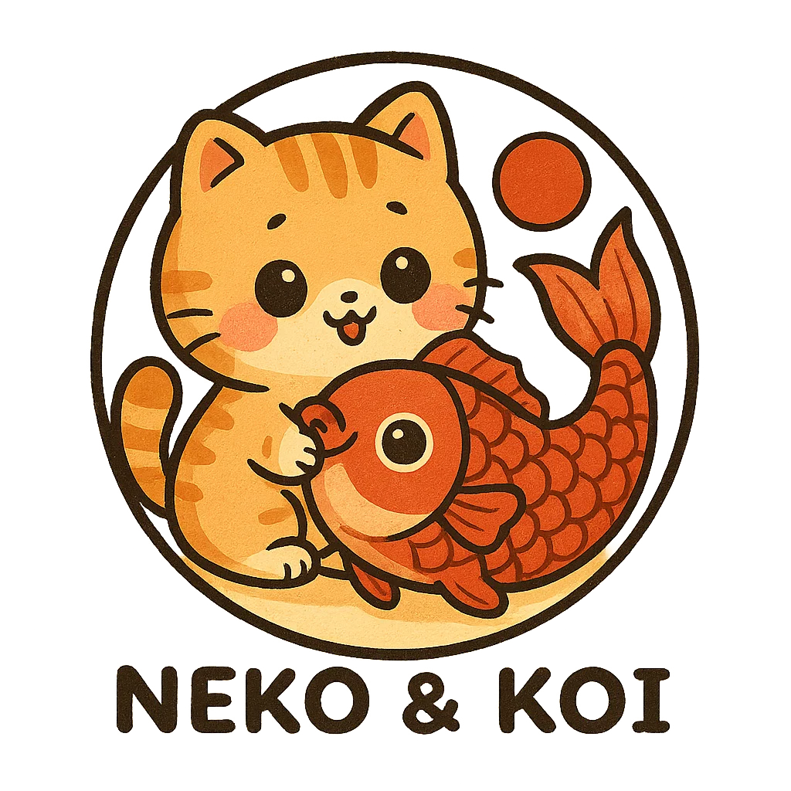

Вітаємо у світі японської мови!

- Ви зможете дивитися аніме й дорами без субтитрів
- Читати манґу в оригіналі
- Розуміти японські пісні та спілкуватися з носіями
- Здобувати нові знання й можливості для навчання та роботи